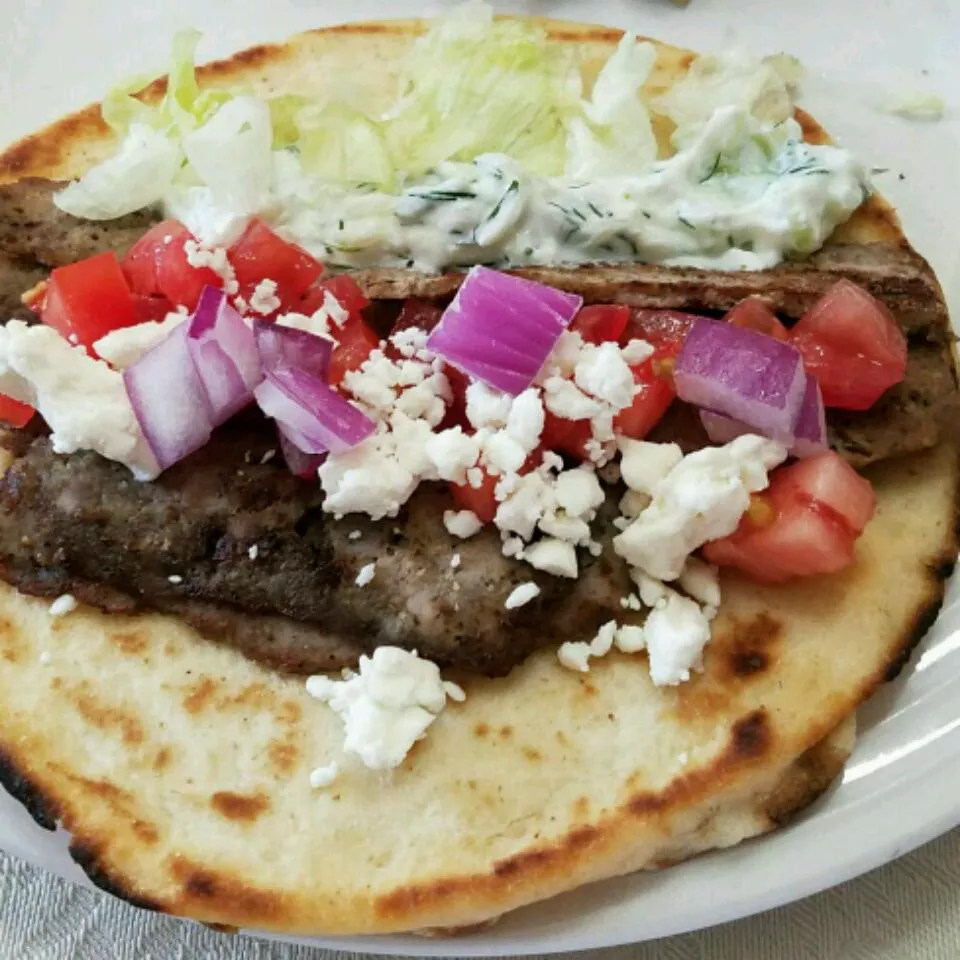

Traditional Gyro Meat

Ingredients
- ½ medium onion, cut into chunks
- 1 pound ground lamb
- 1 pound 80/20 ground beef
- 1 tablespoon minced garlic
- 1 teaspoon dried oregano
- 1 teaspoon ground cumin
- 1 teaspoon dried marjoram
- 1 teaspoon ground dried rosemary
- 1 teaspoon ground dried thyme
- 1 teaspoon ground black pepper
- 1½ teaspoons fine sea salt
- Cooking spray
Steps
-
Snip bacon into small pieces with a scissors and cook in a large skillet
over medium heat until crisp, stirring often, about 10 minutes. Cook and
stir onion with bacon until translucent, about 5 more minutes; set bacon
and onion aside, leaving drippings in the skillet.
-
Bring a large pot of lightly salted water to a boil. Cook egg noodles in
the boiling water, stirring occasionally until cooked through but firm
to the bite, about 5 minutes. Drain.
-
Transfer bacon and onion mixture with drippings into the pot used to
cook the noodles and cook and stir cabbage until coated with drippings.
Cover pot and cook until cabbage is tender, 10 to 12 minutes, stirring
occasionally. Gently stir in noodles and season to taste with salt and
black pepper.